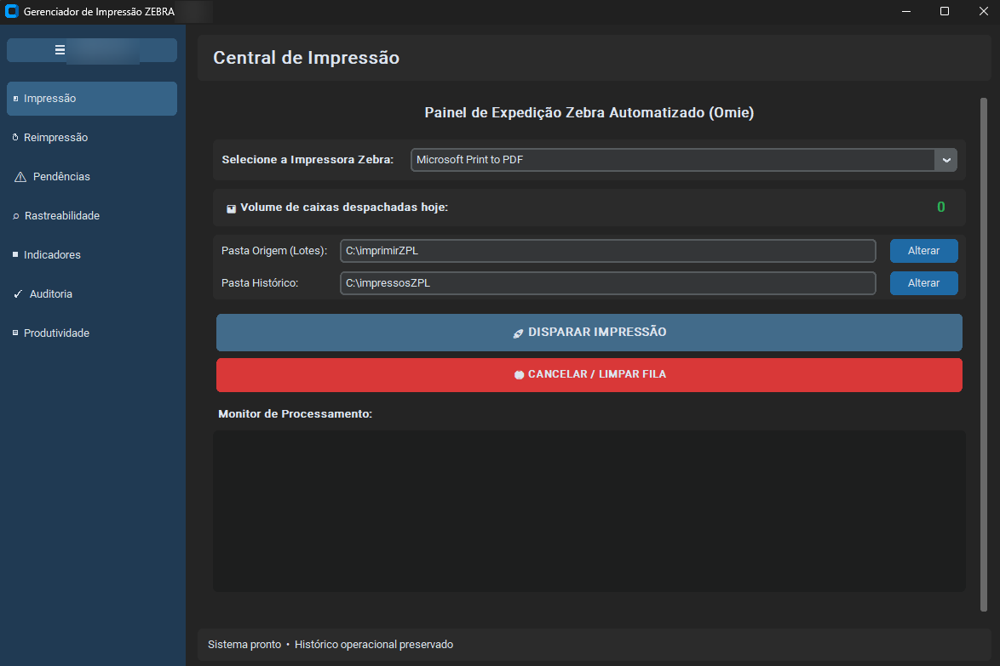
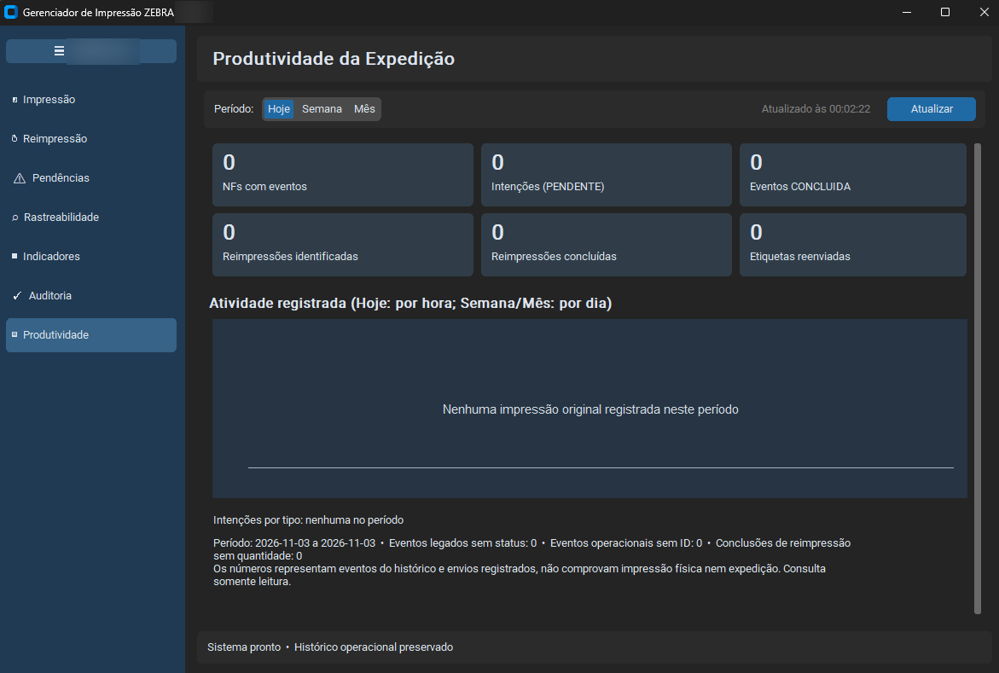
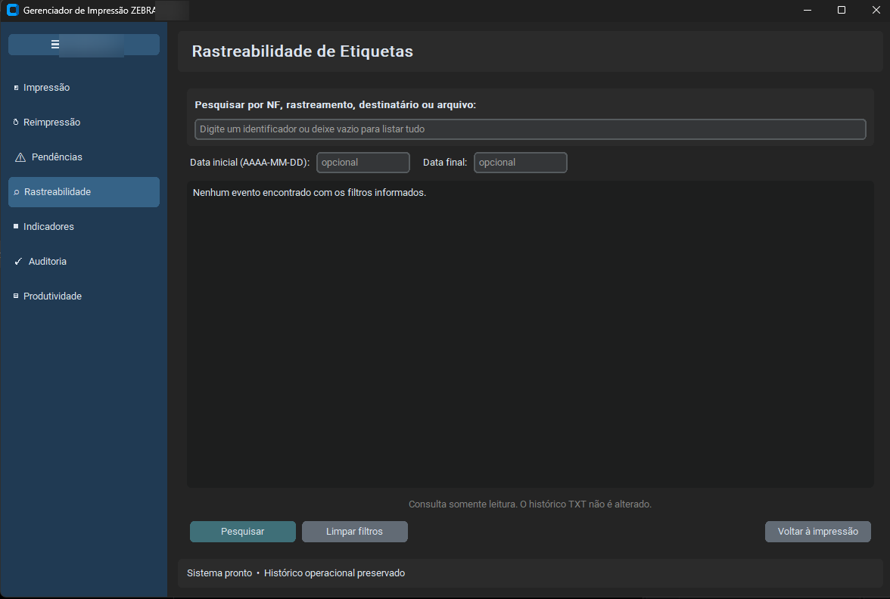
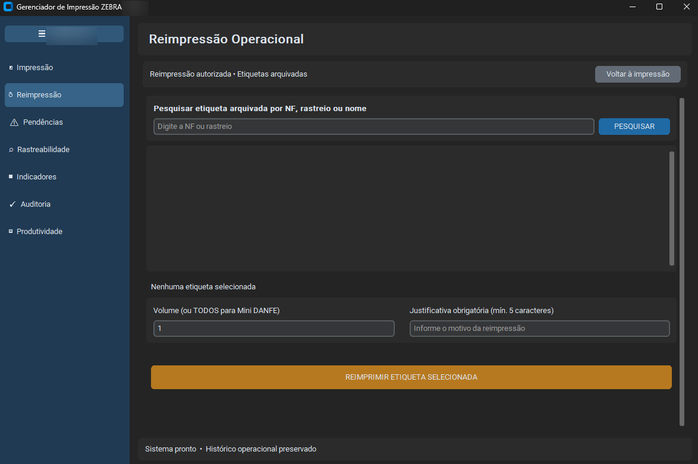
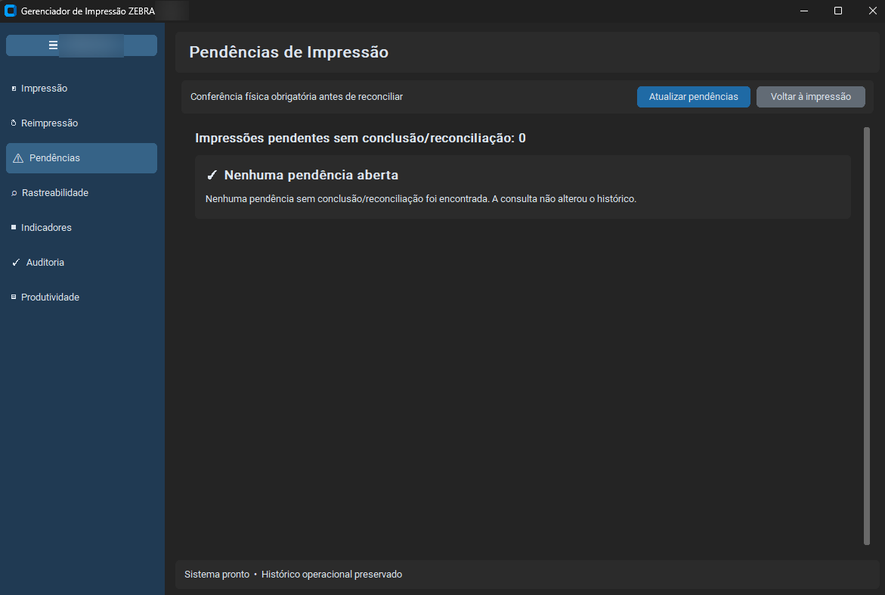
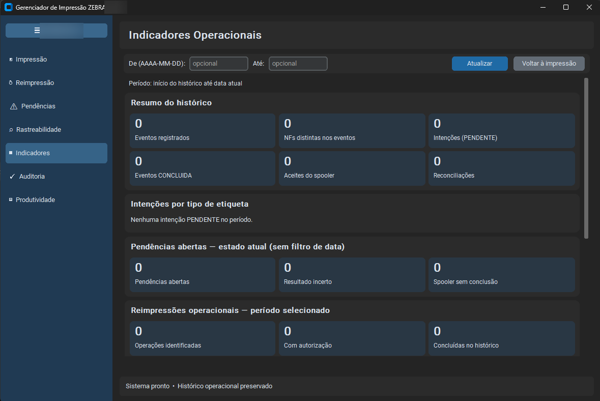
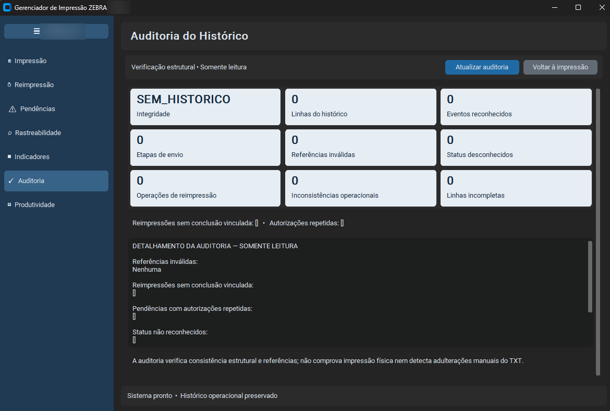

PROJETO REAL / INTERFACE DO SISTEMA


Central de Impressão — ampliar capturaCapturas com identificação da empresa ocultada, sem dados operacionais. Selecione uma tela para ampliar.


Produtividade da Expedição — ampliar captura

Rastreabilidade de Etiquetas — ampliar captura

Reimpressão Operacional — ampliar captura

Pendências de Impressão — ampliar captura

Indicadores Operacionais — ampliar captura

Auditoria do Histórico — ampliar captura01 / AUTOMAÇÃO OPERACIONAL EM PYTHON
Gerenciador de Etiquetas ZPL
Aplicação desktop em Python que centraliza a impressão de etiquetas e o acompanhamento da expedição, com interface em CustomTkinter para Windows.
- Processamento em lote de ZPL, TXT e PDF, com conversão de etiquetas PDF para ZPL.
- Etiquetas dos Correios e mini DANFE, com controle de duplicidade e reimpressão justificada.
- Histórico, rastreabilidade, gestão de pendências e auditoria dos registros.
- Gráficos e resumos de produtividade por dia, semana e mês.
Python · CustomTkinter · ZPL · Windows · Poppler
IMPACTO NA ROTINA
Redução estimada de quase 50% no fluxo de expedição.
Estimativa operacional relatada, sem medição independente, referente ao conjunto das melhorias implementadas na expedição. A digitação manual dos dados das etiquetas foi eliminada desta etapa do fluxo.
Eliminar etapas manuais
Preparação e impressão de etiquetas exigiam conferência, recorte e trabalho repetitivo.
Impressão em lote
Aplicativo Python para processar arquivos, controlar duplicidade e registrar auditoria.
Mais rastreabilidade
Consulta de histórico e pendências, com redução estimada do tempo na operação como um todo.
Estudo de caso completo: desafio, implementação e resultados
Antes. A equipe montava etiquetas com dados das notas fiscais, imprimia documentos em papel, recortava e fixava as etiquetas nas caixas com fita. A preparação manual ocupava parte importante da rotina de expedição.
Minha contribuição. Desenvolvi a solução individualmente, com apoio de inteligência artificial, a partir das necessidades reais da empresa. Fiz o levantamento das necessidades e os testes do programa para a operação.
A solução. Os arquivos de etiquetas são gerados a partir dos dados do ERP Omie e processados em lote. O aplicativo converte PDFs para ZPL, encaminha os trabalhos à impressora e reúne histórico, pendências, reimpressão justificada e indicadores em uma interface desktop.
Decisões técnicas. Python e CustomTkinter para a interface, win32print para o spooler do Windows e pdf2image com Poppler para a conversão de páginas PDF. O arquivo analisado também utiliza pypdf, Pillow e módulos auxiliares próprios.
Resultado percebido. A geração de um arquivo único com todas as etiquetas simplificou a impressão. Segundo meu relato da operação, o tempo de expedição caiu quase pela metade e deixaram de ocorrer erros de digitação nessa etapa, pois os dados passaram a vir do ERP.
Uso atual. Em uso na operação, em um único computador. A evolução em desenvolvimento é uma base de dados compartilhada para atender mais usuários e coordenar o controle de duplicidade; essa capacidade ainda não está disponível.
Limites. O sistema processa arquivos recebidos, sem integração direta documentada com APIs do Omie ou dos Correios. Registros de envio ao spooler não comprovam impressão física. A análise estática do arquivo principal e dos seis módulos auxiliares não substitui os testes no ambiente Windows.
As sete capturas acima mostram impressão, produtividade, rastreabilidade, reimpressão, pendências, indicadores e auditoria. Selecione uma imagem para ampliar.
Projeto empresarial com identidade preservada, sem repositório público.
Explorar demonstração interativa do fluxo ZPL Conversar sobre o projeto